Detectron2#
from wholeslidedata.interoperability.detectron2.iterator import WholeSlideDetectron2Iterator
from wholeslidedata.interoperability.detectron2.trainer import WholeSlideDectectron2Trainer
from wholeslidedata.interoperability.detectron2.predictor import Detectron2DetectionPredictor
from wholeslidedata.iterators import create_batch_iterator
from wholeslidedata.visualization.plotting import plot_batch, plot_batch_detection
import argparse
import os
from pathlib import Path
from detectron2 import model_zoo
from detectron2.config import get_cfg
from detectron2.modeling import build_model
import time
from matplotlib import pyplot as plt
from wholeslidedata.visualization.plotting import plot_boxes
import numpy as np
Data Loading#
user_config = {
'wholeslidedata': {
'default': {
'yaml_source': "/home/user/pathology-whole-slide-data/docs/source/userguide/notebooks/examples/configs/tigerdetectiondata.yml",
'labels': {
"roi": 0,
"lymphocytes and plasma cells": 1
},
"annotation_parser": {
"sample_label_names": ['roi']
},
'batch_shape': {
'batch_size': 10,
'spacing': 0.55,
'shape': [64,64,3],
'y_shape': [1000, 6],
},
'point_sampler_name': "RandomPointSampler",
'point_sampler': {
"buffer": {'spacing': "${batch_shape.spacing}", 'value': -32},
},
'patch_label_sampler_name': 'DetectionPatchLabelSampler',
'patch_label_sampler': {
"max_number_objects": 1000,
"detection_labels": ['lymphocytes and plasma cells'],
},
}
}
}
output_folder = Path('/home/user/detectron2_trained')
cpus = 4
with create_batch_iterator(
user_config=user_config,
mode='training',
cpus=4,
iterator_class=WholeSlideDetectron2Iterator,
) as training_batch_generator:
for _ in range(10):
batch_dicts = next(training_batch_generator)
fig, ax = plt.subplots(1,10, figsize=(20,10))
for i in range(10):
patch = batch_dicts[i]['image'].cpu().detach().numpy().transpose(1,2,0).astype('uint8')
_boxes = batch_dicts[i]['instances'].gt_boxes.tensor.cpu().detach().numpy()
boxes = np.ones((len(_boxes), 6))
boxes[..., :4] = _boxes
max_width, max_height = batch_dicts[i]['instances'].image_size
ax[i].imshow(patch)
plot_boxes(boxes, max_width=max_width, max_height=max_height, axes=ax[i])
plt.show()
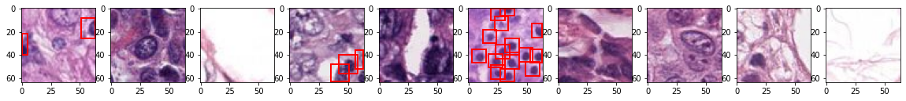
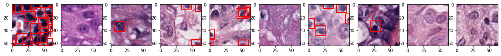
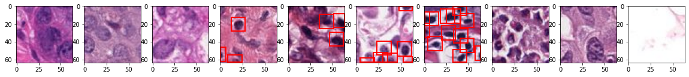
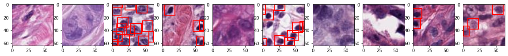
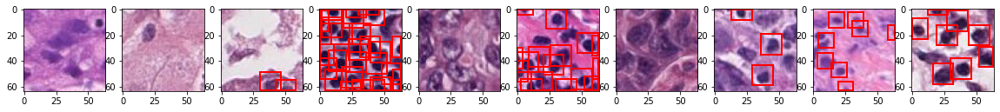
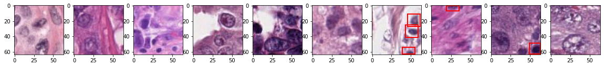
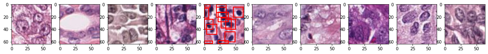
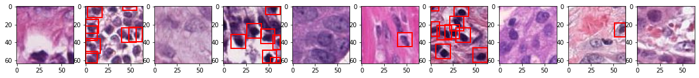
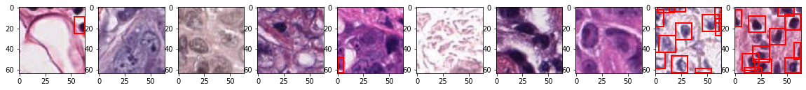
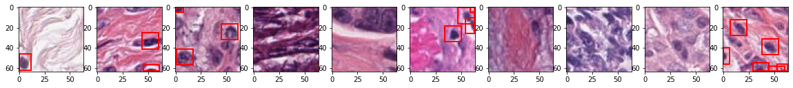
Training#
cfg = get_cfg()
cfg.merge_from_file(
model_zoo.get_config_file("COCO-Detection/faster_rcnn_R_50_FPN_3x.yaml")
)
cfg.DATASETS.TRAIN = ("detection_dataset2",)
cfg.DATASETS.TEST = ()
cfg.DATALOADER.NUM_WORKERS = 1
cfg.MODEL.ROI_HEADS.BATCH_SIZE_PER_IMAGE = 512
cfg.MODEL.ROI_HEADS.NUM_CLASSES = 1
cfg.MODEL.ANCHOR_GENERATOR.SIZES = [[16, 24, 32]]
cfg.SOLVER.IMS_PER_BATCH = 10
cfg.SOLVER.BASE_LR = 0.001 # pick a good LR
cfg.SOLVER.MAX_ITER = 2000 # 300 iterations seems good enough for this toy dataset; you may need to train longer for a practical dataset
cfg.SOLVER.STEPS = (10, 100, 250)
cfg.SOLVER.WARMUP_ITERS = 0
cfg.SOLVER.GAMMA = 0.5
cfg.OUTPUT_DIR = str(output_folder)
output_folder.mkdir(parents=True, exist_ok=True)
# cfg.MODEL.WEIGHTS = "detectron2://COCO-Detection/faster_rcnn_X_101_32x8d_FPN_3x/139173657/model_final_68b088.pkl" # Let training initialize from model zoo
# cfg.MODEL.WEIGHTS = None
model = build_model(cfg)
pytorch_total_params = sum(p.numel() for p in model.parameters() if p.requires_grad)
print("Parameter Count:\n" + str(pytorch_total_params))
trainer = WholeSlideDectectron2Trainer(cfg, user_config=user_config, cpus=cpus)
trainer.resume_or_load(resume=False)
trainer.train()
Parameter Count:
41080371
[01/29 18:33:14 d2.engine.defaults]: Model:
GeneralizedRCNN(
(backbone): FPN(
(fpn_lateral2): Conv2d(256, 256, kernel_size=(1, 1), stride=(1, 1))
(fpn_output2): Conv2d(256, 256, kernel_size=(3, 3), stride=(1, 1), padding=(1, 1))
(fpn_lateral3): Conv2d(512, 256, kernel_size=(1, 1), stride=(1, 1))
(fpn_output3): Conv2d(256, 256, kernel_size=(3, 3), stride=(1, 1), padding=(1, 1))
(fpn_lateral4): Conv2d(1024, 256, kernel_size=(1, 1), stride=(1, 1))
(fpn_output4): Conv2d(256, 256, kernel_size=(3, 3), stride=(1, 1), padding=(1, 1))
(fpn_lateral5): Conv2d(2048, 256, kernel_size=(1, 1), stride=(1, 1))
(fpn_output5): Conv2d(256, 256, kernel_size=(3, 3), stride=(1, 1), padding=(1, 1))
(top_block): LastLevelMaxPool()
(bottom_up): ResNet(
(stem): BasicStem(
(conv1): Conv2d(
3, 64, kernel_size=(7, 7), stride=(2, 2), padding=(3, 3), bias=False
(norm): FrozenBatchNorm2d(num_features=64, eps=1e-05)
)
)
(res2): Sequential(
(0): BottleneckBlock(
(shortcut): Conv2d(
64, 256, kernel_size=(1, 1), stride=(1, 1), bias=False
(norm): FrozenBatchNorm2d(num_features=256, eps=1e-05)
)
(conv1): Conv2d(
64, 64, kernel_size=(1, 1), stride=(1, 1), bias=False
(norm): FrozenBatchNorm2d(num_features=64, eps=1e-05)
)
(conv2): Conv2d(
64, 64, kernel_size=(3, 3), stride=(1, 1), padding=(1, 1), bias=False
(norm): FrozenBatchNorm2d(num_features=64, eps=1e-05)
)
(conv3): Conv2d(
64, 256, kernel_size=(1, 1), stride=(1, 1), bias=False
(norm): FrozenBatchNorm2d(num_features=256, eps=1e-05)
)
)
(1): BottleneckBlock(
(conv1): Conv2d(
256, 64, kernel_size=(1, 1), stride=(1, 1), bias=False
(norm): FrozenBatchNorm2d(num_features=64, eps=1e-05)
)
(conv2): Conv2d(
64, 64, kernel_size=(3, 3), stride=(1, 1), padding=(1, 1), bias=False
(norm): FrozenBatchNorm2d(num_features=64, eps=1e-05)
)
(conv3): Conv2d(
64, 256, kernel_size=(1, 1), stride=(1, 1), bias=False
(norm): FrozenBatchNorm2d(num_features=256, eps=1e-05)
)
)
(2): BottleneckBlock(
(conv1): Conv2d(
256, 64, kernel_size=(1, 1), stride=(1, 1), bias=False
(norm): FrozenBatchNorm2d(num_features=64, eps=1e-05)
)
(conv2): Conv2d(
64, 64, kernel_size=(3, 3), stride=(1, 1), padding=(1, 1), bias=False
(norm): FrozenBatchNorm2d(num_features=64, eps=1e-05)
)
(conv3): Conv2d(
64, 256, kernel_size=(1, 1), stride=(1, 1), bias=False
(norm): FrozenBatchNorm2d(num_features=256, eps=1e-05)
)
)
)
(res3): Sequential(
(0): BottleneckBlock(
(shortcut): Conv2d(
256, 512, kernel_size=(1, 1), stride=(2, 2), bias=False
(norm): FrozenBatchNorm2d(num_features=512, eps=1e-05)
)
(conv1): Conv2d(
256, 128, kernel_size=(1, 1), stride=(2, 2), bias=False
(norm): FrozenBatchNorm2d(num_features=128, eps=1e-05)
)
(conv2): Conv2d(
128, 128, kernel_size=(3, 3), stride=(1, 1), padding=(1, 1), bias=False
(norm): FrozenBatchNorm2d(num_features=128, eps=1e-05)
)
(conv3): Conv2d(
128, 512, kernel_size=(1, 1), stride=(1, 1), bias=False
(norm): FrozenBatchNorm2d(num_features=512, eps=1e-05)
)
)
(1): BottleneckBlock(
(conv1): Conv2d(
512, 128, kernel_size=(1, 1), stride=(1, 1), bias=False
(norm): FrozenBatchNorm2d(num_features=128, eps=1e-05)
)
(conv2): Conv2d(
128, 128, kernel_size=(3, 3), stride=(1, 1), padding=(1, 1), bias=False
(norm): FrozenBatchNorm2d(num_features=128, eps=1e-05)
)
(conv3): Conv2d(
128, 512, kernel_size=(1, 1), stride=(1, 1), bias=False
(norm): FrozenBatchNorm2d(num_features=512, eps=1e-05)
)
)
(2): BottleneckBlock(
(conv1): Conv2d(
512, 128, kernel_size=(1, 1), stride=(1, 1), bias=False
(norm): FrozenBatchNorm2d(num_features=128, eps=1e-05)
)
(conv2): Conv2d(
128, 128, kernel_size=(3, 3), stride=(1, 1), padding=(1, 1), bias=False
(norm): FrozenBatchNorm2d(num_features=128, eps=1e-05)
)
(conv3): Conv2d(
128, 512, kernel_size=(1, 1), stride=(1, 1), bias=False
(norm): FrozenBatchNorm2d(num_features=512, eps=1e-05)
)
)
(3): BottleneckBlock(
(conv1): Conv2d(
512, 128, kernel_size=(1, 1), stride=(1, 1), bias=False
(norm): FrozenBatchNorm2d(num_features=128, eps=1e-05)
)
(conv2): Conv2d(
128, 128, kernel_size=(3, 3), stride=(1, 1), padding=(1, 1), bias=False
(norm): FrozenBatchNorm2d(num_features=128, eps=1e-05)
)
(conv3): Conv2d(
128, 512, kernel_size=(1, 1), stride=(1, 1), bias=False
(norm): FrozenBatchNorm2d(num_features=512, eps=1e-05)
)
)
)
(res4): Sequential(
(0): BottleneckBlock(
(shortcut): Conv2d(
512, 1024, kernel_size=(1, 1), stride=(2, 2), bias=False
(norm): FrozenBatchNorm2d(num_features=1024, eps=1e-05)
)
(conv1): Conv2d(
512, 256, kernel_size=(1, 1), stride=(2, 2), bias=False
(norm): FrozenBatchNorm2d(num_features=256, eps=1e-05)
)
(conv2): Conv2d(
256, 256, kernel_size=(3, 3), stride=(1, 1), padding=(1, 1), bias=False
(norm): FrozenBatchNorm2d(num_features=256, eps=1e-05)
)
(conv3): Conv2d(
256, 1024, kernel_size=(1, 1), stride=(1, 1), bias=False
(norm): FrozenBatchNorm2d(num_features=1024, eps=1e-05)
)
)
(1): BottleneckBlock(
(conv1): Conv2d(
1024, 256, kernel_size=(1, 1), stride=(1, 1), bias=False
(norm): FrozenBatchNorm2d(num_features=256, eps=1e-05)
)
(conv2): Conv2d(
256, 256, kernel_size=(3, 3), stride=(1, 1), padding=(1, 1), bias=False
(norm): FrozenBatchNorm2d(num_features=256, eps=1e-05)
)
(conv3): Conv2d(
256, 1024, kernel_size=(1, 1), stride=(1, 1), bias=False
(norm): FrozenBatchNorm2d(num_features=1024, eps=1e-05)
)
)
(2): BottleneckBlock(
(conv1): Conv2d(
1024, 256, kernel_size=(1, 1), stride=(1, 1), bias=False
(norm): FrozenBatchNorm2d(num_features=256, eps=1e-05)
)
(conv2): Conv2d(
256, 256, kernel_size=(3, 3), stride=(1, 1), padding=(1, 1), bias=False
(norm): FrozenBatchNorm2d(num_features=256, eps=1e-05)
)
(conv3): Conv2d(
256, 1024, kernel_size=(1, 1), stride=(1, 1), bias=False
(norm): FrozenBatchNorm2d(num_features=1024, eps=1e-05)
)
)
(3): BottleneckBlock(
(conv1): Conv2d(
1024, 256, kernel_size=(1, 1), stride=(1, 1), bias=False
(norm): FrozenBatchNorm2d(num_features=256, eps=1e-05)
)
(conv2): Conv2d(
256, 256, kernel_size=(3, 3), stride=(1, 1), padding=(1, 1), bias=False
(norm): FrozenBatchNorm2d(num_features=256, eps=1e-05)
)
(conv3): Conv2d(
256, 1024, kernel_size=(1, 1), stride=(1, 1), bias=False
(norm): FrozenBatchNorm2d(num_features=1024, eps=1e-05)
)
)
(4): BottleneckBlock(
(conv1): Conv2d(
1024, 256, kernel_size=(1, 1), stride=(1, 1), bias=False
(norm): FrozenBatchNorm2d(num_features=256, eps=1e-05)
)
(conv2): Conv2d(
256, 256, kernel_size=(3, 3), stride=(1, 1), padding=(1, 1), bias=False
(norm): FrozenBatchNorm2d(num_features=256, eps=1e-05)
)
(conv3): Conv2d(
256, 1024, kernel_size=(1, 1), stride=(1, 1), bias=False
(norm): FrozenBatchNorm2d(num_features=1024, eps=1e-05)
)
)
(5): BottleneckBlock(
(conv1): Conv2d(
1024, 256, kernel_size=(1, 1), stride=(1, 1), bias=False
(norm): FrozenBatchNorm2d(num_features=256, eps=1e-05)
)
(conv2): Conv2d(
256, 256, kernel_size=(3, 3), stride=(1, 1), padding=(1, 1), bias=False
(norm): FrozenBatchNorm2d(num_features=256, eps=1e-05)
)
(conv3): Conv2d(
256, 1024, kernel_size=(1, 1), stride=(1, 1), bias=False
(norm): FrozenBatchNorm2d(num_features=1024, eps=1e-05)
)
)
)
(res5): Sequential(
(0): BottleneckBlock(
(shortcut): Conv2d(
1024, 2048, kernel_size=(1, 1), stride=(2, 2), bias=False
(norm): FrozenBatchNorm2d(num_features=2048, eps=1e-05)
)
(conv1): Conv2d(
1024, 512, kernel_size=(1, 1), stride=(2, 2), bias=False
(norm): FrozenBatchNorm2d(num_features=512, eps=1e-05)
)
(conv2): Conv2d(
512, 512, kernel_size=(3, 3), stride=(1, 1), padding=(1, 1), bias=False
(norm): FrozenBatchNorm2d(num_features=512, eps=1e-05)
)
(conv3): Conv2d(
512, 2048, kernel_size=(1, 1), stride=(1, 1), bias=False
(norm): FrozenBatchNorm2d(num_features=2048, eps=1e-05)
)
)
(1): BottleneckBlock(
(conv1): Conv2d(
2048, 512, kernel_size=(1, 1), stride=(1, 1), bias=False
(norm): FrozenBatchNorm2d(num_features=512, eps=1e-05)
)
(conv2): Conv2d(
512, 512, kernel_size=(3, 3), stride=(1, 1), padding=(1, 1), bias=False
(norm): FrozenBatchNorm2d(num_features=512, eps=1e-05)
)
(conv3): Conv2d(
512, 2048, kernel_size=(1, 1), stride=(1, 1), bias=False
(norm): FrozenBatchNorm2d(num_features=2048, eps=1e-05)
)
)
(2): BottleneckBlock(
(conv1): Conv2d(
2048, 512, kernel_size=(1, 1), stride=(1, 1), bias=False
(norm): FrozenBatchNorm2d(num_features=512, eps=1e-05)
)
(conv2): Conv2d(
512, 512, kernel_size=(3, 3), stride=(1, 1), padding=(1, 1), bias=False
(norm): FrozenBatchNorm2d(num_features=512, eps=1e-05)
)
(conv3): Conv2d(
512, 2048, kernel_size=(1, 1), stride=(1, 1), bias=False
(norm): FrozenBatchNorm2d(num_features=2048, eps=1e-05)
)
)
)
)
)
(proposal_generator): RPN(
(rpn_head): StandardRPNHead(
(conv): Conv2d(
256, 256, kernel_size=(3, 3), stride=(1, 1), padding=(1, 1)
(activation): ReLU()
)
(objectness_logits): Conv2d(256, 9, kernel_size=(1, 1), stride=(1, 1))
(anchor_deltas): Conv2d(256, 36, kernel_size=(1, 1), stride=(1, 1))
)
(anchor_generator): DefaultAnchorGenerator(
(cell_anchors): BufferList()
)
)
(roi_heads): StandardROIHeads(
(box_pooler): ROIPooler(
(level_poolers): ModuleList(
(0): ROIAlign(output_size=(7, 7), spatial_scale=0.25, sampling_ratio=0, aligned=True)
(1): ROIAlign(output_size=(7, 7), spatial_scale=0.125, sampling_ratio=0, aligned=True)
(2): ROIAlign(output_size=(7, 7), spatial_scale=0.0625, sampling_ratio=0, aligned=True)
(3): ROIAlign(output_size=(7, 7), spatial_scale=0.03125, sampling_ratio=0, aligned=True)
)
)
(box_head): FastRCNNConvFCHead(
(flatten): Flatten(start_dim=1, end_dim=-1)
(fc1): Linear(in_features=12544, out_features=1024, bias=True)
(fc_relu1): ReLU()
(fc2): Linear(in_features=1024, out_features=1024, bias=True)
(fc_relu2): ReLU()
)
(box_predictor): FastRCNNOutputLayers(
(cls_score): Linear(in_features=1024, out_features=2, bias=True)
(bbox_pred): Linear(in_features=1024, out_features=4, bias=True)
)
)
)
[01/29 18:33:34 d2.checkpoint.c2_model_loading]: Renaming Caffe2 weights ......
[01/29 18:33:35 d2.checkpoint.c2_model_loading]: Following weights matched with submodule backbone.bottom_up:
| Names in Model | Names in Checkpoint | Shapes |
|:------------------|:-------------------------|:------------------------------------------------|
| res2.0.conv1.* | res2_0_branch2a_{bn_*,w} | (64,) (64,) (64,) (64,) (64,64,1,1) |
| res2.0.conv2.* | res2_0_branch2b_{bn_*,w} | (64,) (64,) (64,) (64,) (64,64,3,3) |
| res2.0.conv3.* | res2_0_branch2c_{bn_*,w} | (256,) (256,) (256,) (256,) (256,64,1,1) |
| res2.0.shortcut.* | res2_0_branch1_{bn_*,w} | (256,) (256,) (256,) (256,) (256,64,1,1) |
| res2.1.conv1.* | res2_1_branch2a_{bn_*,w} | (64,) (64,) (64,) (64,) (64,256,1,1) |
| res2.1.conv2.* | res2_1_branch2b_{bn_*,w} | (64,) (64,) (64,) (64,) (64,64,3,3) |
| res2.1.conv3.* | res2_1_branch2c_{bn_*,w} | (256,) (256,) (256,) (256,) (256,64,1,1) |
| res2.2.conv1.* | res2_2_branch2a_{bn_*,w} | (64,) (64,) (64,) (64,) (64,256,1,1) |
| res2.2.conv2.* | res2_2_branch2b_{bn_*,w} | (64,) (64,) (64,) (64,) (64,64,3,3) |
| res2.2.conv3.* | res2_2_branch2c_{bn_*,w} | (256,) (256,) (256,) (256,) (256,64,1,1) |
| res3.0.conv1.* | res3_0_branch2a_{bn_*,w} | (128,) (128,) (128,) (128,) (128,256,1,1) |
| res3.0.conv2.* | res3_0_branch2b_{bn_*,w} | (128,) (128,) (128,) (128,) (128,128,3,3) |
| res3.0.conv3.* | res3_0_branch2c_{bn_*,w} | (512,) (512,) (512,) (512,) (512,128,1,1) |
| res3.0.shortcut.* | res3_0_branch1_{bn_*,w} | (512,) (512,) (512,) (512,) (512,256,1,1) |
| res3.1.conv1.* | res3_1_branch2a_{bn_*,w} | (128,) (128,) (128,) (128,) (128,512,1,1) |
| res3.1.conv2.* | res3_1_branch2b_{bn_*,w} | (128,) (128,) (128,) (128,) (128,128,3,3) |
| res3.1.conv3.* | res3_1_branch2c_{bn_*,w} | (512,) (512,) (512,) (512,) (512,128,1,1) |
| res3.2.conv1.* | res3_2_branch2a_{bn_*,w} | (128,) (128,) (128,) (128,) (128,512,1,1) |
| res3.2.conv2.* | res3_2_branch2b_{bn_*,w} | (128,) (128,) (128,) (128,) (128,128,3,3) |
| res3.2.conv3.* | res3_2_branch2c_{bn_*,w} | (512,) (512,) (512,) (512,) (512,128,1,1) |
| res3.3.conv1.* | res3_3_branch2a_{bn_*,w} | (128,) (128,) (128,) (128,) (128,512,1,1) |
| res3.3.conv2.* | res3_3_branch2b_{bn_*,w} | (128,) (128,) (128,) (128,) (128,128,3,3) |
| res3.3.conv3.* | res3_3_branch2c_{bn_*,w} | (512,) (512,) (512,) (512,) (512,128,1,1) |
| res4.0.conv1.* | res4_0_branch2a_{bn_*,w} | (256,) (256,) (256,) (256,) (256,512,1,1) |
| res4.0.conv2.* | res4_0_branch2b_{bn_*,w} | (256,) (256,) (256,) (256,) (256,256,3,3) |
| res4.0.conv3.* | res4_0_branch2c_{bn_*,w} | (1024,) (1024,) (1024,) (1024,) (1024,256,1,1) |
| res4.0.shortcut.* | res4_0_branch1_{bn_*,w} | (1024,) (1024,) (1024,) (1024,) (1024,512,1,1) |
| res4.1.conv1.* | res4_1_branch2a_{bn_*,w} | (256,) (256,) (256,) (256,) (256,1024,1,1) |
| res4.1.conv2.* | res4_1_branch2b_{bn_*,w} | (256,) (256,) (256,) (256,) (256,256,3,3) |
| res4.1.conv3.* | res4_1_branch2c_{bn_*,w} | (1024,) (1024,) (1024,) (1024,) (1024,256,1,1) |
| res4.2.conv1.* | res4_2_branch2a_{bn_*,w} | (256,) (256,) (256,) (256,) (256,1024,1,1) |
| res4.2.conv2.* | res4_2_branch2b_{bn_*,w} | (256,) (256,) (256,) (256,) (256,256,3,3) |
| res4.2.conv3.* | res4_2_branch2c_{bn_*,w} | (1024,) (1024,) (1024,) (1024,) (1024,256,1,1) |
| res4.3.conv1.* | res4_3_branch2a_{bn_*,w} | (256,) (256,) (256,) (256,) (256,1024,1,1) |
| res4.3.conv2.* | res4_3_branch2b_{bn_*,w} | (256,) (256,) (256,) (256,) (256,256,3,3) |
| res4.3.conv3.* | res4_3_branch2c_{bn_*,w} | (1024,) (1024,) (1024,) (1024,) (1024,256,1,1) |
| res4.4.conv1.* | res4_4_branch2a_{bn_*,w} | (256,) (256,) (256,) (256,) (256,1024,1,1) |
| res4.4.conv2.* | res4_4_branch2b_{bn_*,w} | (256,) (256,) (256,) (256,) (256,256,3,3) |
| res4.4.conv3.* | res4_4_branch2c_{bn_*,w} | (1024,) (1024,) (1024,) (1024,) (1024,256,1,1) |
| res4.5.conv1.* | res4_5_branch2a_{bn_*,w} | (256,) (256,) (256,) (256,) (256,1024,1,1) |
| res4.5.conv2.* | res4_5_branch2b_{bn_*,w} | (256,) (256,) (256,) (256,) (256,256,3,3) |
| res4.5.conv3.* | res4_5_branch2c_{bn_*,w} | (1024,) (1024,) (1024,) (1024,) (1024,256,1,1) |
| res5.0.conv1.* | res5_0_branch2a_{bn_*,w} | (512,) (512,) (512,) (512,) (512,1024,1,1) |
| res5.0.conv2.* | res5_0_branch2b_{bn_*,w} | (512,) (512,) (512,) (512,) (512,512,3,3) |
| res5.0.conv3.* | res5_0_branch2c_{bn_*,w} | (2048,) (2048,) (2048,) (2048,) (2048,512,1,1) |
| res5.0.shortcut.* | res5_0_branch1_{bn_*,w} | (2048,) (2048,) (2048,) (2048,) (2048,1024,1,1) |
| res5.1.conv1.* | res5_1_branch2a_{bn_*,w} | (512,) (512,) (512,) (512,) (512,2048,1,1) |
| res5.1.conv2.* | res5_1_branch2b_{bn_*,w} | (512,) (512,) (512,) (512,) (512,512,3,3) |
| res5.1.conv3.* | res5_1_branch2c_{bn_*,w} | (2048,) (2048,) (2048,) (2048,) (2048,512,1,1) |
| res5.2.conv1.* | res5_2_branch2a_{bn_*,w} | (512,) (512,) (512,) (512,) (512,2048,1,1) |
| res5.2.conv2.* | res5_2_branch2b_{bn_*,w} | (512,) (512,) (512,) (512,) (512,512,3,3) |
| res5.2.conv3.* | res5_2_branch2c_{bn_*,w} | (2048,) (2048,) (2048,) (2048,) (2048,512,1,1) |
| stem.conv1.norm.* | res_conv1_bn_* | (64,) (64,) (64,) (64,) |
| stem.conv1.weight | conv1_w | (64, 3, 7, 7) |
Some model parameters or buffers are not found in the checkpoint:
backbone.fpn_lateral2.{bias, weight}
backbone.fpn_lateral3.{bias, weight}
backbone.fpn_lateral4.{bias, weight}
backbone.fpn_lateral5.{bias, weight}
backbone.fpn_output2.{bias, weight}
backbone.fpn_output3.{bias, weight}
backbone.fpn_output4.{bias, weight}
backbone.fpn_output5.{bias, weight}
proposal_generator.rpn_head.anchor_deltas.{bias, weight}
proposal_generator.rpn_head.conv.{bias, weight}
proposal_generator.rpn_head.objectness_logits.{bias, weight}
roi_heads.box_head.fc1.{bias, weight}
roi_heads.box_head.fc2.{bias, weight}
roi_heads.box_predictor.bbox_pred.{bias, weight}
roi_heads.box_predictor.cls_score.{bias, weight}
The checkpoint state_dict contains keys that are not used by the model:
fc1000.{bias, weight}
stem.conv1.bias
[01/29 18:33:35 d2.engine.train_loop]: Starting training from iteration 0
[01/29 18:34:00 d2.utils.events]: eta: 0:05:43 iter: 19 total_loss: 0.8492 loss_cls: 0.1674 loss_box_reg: 0.1302 loss_rpn_cls: 0.5453 loss_rpn_loc: 0.02679 time: 0.1724 data_time: 1.0846 lr: 0.0005 max_mem: 1899M
[01/29 18:34:04 d2.utils.events]: eta: 0:05:44 iter: 39 total_loss: 0.6633 loss_cls: 0.164 loss_box_reg: 0.1862 loss_rpn_cls: 0.2398 loss_rpn_loc: 0.02393 time: 0.1793 data_time: 0.0022 lr: 0.0005 max_mem: 1899M
[01/29 18:34:07 d2.utils.events]: eta: 0:05:41 iter: 59 total_loss: 0.5028 loss_cls: 0.1697 loss_box_reg: 0.1719 loss_rpn_cls: 0.1309 loss_rpn_loc: 0.02424 time: 0.1806 data_time: 0.0020 lr: 0.0005 max_mem: 1899M
[01/29 18:34:11 d2.utils.events]: eta: 0:05:34 iter: 79 total_loss: 0.391 loss_cls: 0.126 loss_box_reg: 0.1444 loss_rpn_cls: 0.09956 loss_rpn_loc: 0.02374 time: 0.1786 data_time: 0.0018 lr: 0.0005 max_mem: 1899M
[01/29 18:34:14 d2.utils.events]: eta: 0:05:32 iter: 99 total_loss: 0.3534 loss_cls: 0.1221 loss_box_reg: 0.1371 loss_rpn_cls: 0.08259 loss_rpn_loc: 0.02706 time: 0.1783 data_time: 0.0020 lr: 0.0005 max_mem: 1899M
[01/29 18:34:18 d2.utils.events]: eta: 0:05:30 iter: 119 total_loss: 0.3349 loss_cls: 0.1077 loss_box_reg: 0.1207 loss_rpn_cls: 0.07768 loss_rpn_loc: 0.02076 time: 0.1783 data_time: 0.0020 lr: 0.00025 max_mem: 1899M
[01/29 18:34:21 d2.utils.events]: eta: 0:05:24 iter: 139 total_loss: 0.2276 loss_cls: 0.07363 loss_box_reg: 0.08766 loss_rpn_cls: 0.05968 loss_rpn_loc: 0.01663 time: 0.1779 data_time: 0.0018 lr: 0.00025 max_mem: 1899M
[01/29 18:34:25 d2.utils.events]: eta: 0:05:21 iter: 159 total_loss: 0.2993 loss_cls: 0.09604 loss_box_reg: 0.1069 loss_rpn_cls: 0.07666 loss_rpn_loc: 0.02046 time: 0.1780 data_time: 0.0020 lr: 0.00025 max_mem: 1899M
[01/29 18:34:29 d2.utils.events]: eta: 0:05:19 iter: 179 total_loss: 0.3056 loss_cls: 0.09218 loss_box_reg: 0.1176 loss_rpn_cls: 0.07297 loss_rpn_loc: 0.0261 time: 0.1786 data_time: 0.0022 lr: 0.00025 max_mem: 1899M
[01/29 18:34:32 d2.utils.events]: eta: 0:05:14 iter: 199 total_loss: 0.3726 loss_cls: 0.1185 loss_box_reg: 0.1502 loss_rpn_cls: 0.08048 loss_rpn_loc: 0.02421 time: 0.1781 data_time: 0.0018 lr: 0.00025 max_mem: 1899M
[01/29 18:34:36 d2.utils.events]: eta: 0:05:10 iter: 219 total_loss: 0.2757 loss_cls: 0.08667 loss_box_reg: 0.104 loss_rpn_cls: 0.06292 loss_rpn_loc: 0.01633 time: 0.1777 data_time: 0.0018 lr: 0.00025 max_mem: 1899M
[01/29 18:34:39 d2.utils.events]: eta: 0:05:07 iter: 239 total_loss: 0.2819 loss_cls: 0.0905 loss_box_reg: 0.1148 loss_rpn_cls: 0.06531 loss_rpn_loc: 0.01972 time: 0.1778 data_time: 0.0020 lr: 0.00025 max_mem: 1899M
[01/29 18:34:43 d2.utils.events]: eta: 0:05:03 iter: 259 total_loss: 0.2961 loss_cls: 0.09875 loss_box_reg: 0.1161 loss_rpn_cls: 0.07157 loss_rpn_loc: 0.01899 time: 0.1780 data_time: 0.0020 lr: 0.000125 max_mem: 1899M
[01/29 18:34:46 d2.utils.events]: eta: 0:05:00 iter: 279 total_loss: 0.2579 loss_cls: 0.08058 loss_box_reg: 0.1125 loss_rpn_cls: 0.06118 loss_rpn_loc: 0.01484 time: 0.1784 data_time: 0.0024 lr: 0.000125 max_mem: 1899M
[01/29 18:34:50 d2.utils.events]: eta: 0:04:56 iter: 299 total_loss: 0.3607 loss_cls: 0.1084 loss_box_reg: 0.1411 loss_rpn_cls: 0.06978 loss_rpn_loc: 0.01897 time: 0.1779 data_time: 0.0019 lr: 0.000125 max_mem: 1899M
[01/29 18:34:53 d2.utils.events]: eta: 0:04:52 iter: 319 total_loss: 0.3194 loss_cls: 0.09569 loss_box_reg: 0.1346 loss_rpn_cls: 0.0712 loss_rpn_loc: 0.02315 time: 0.1776 data_time: 0.0019 lr: 0.000125 max_mem: 1899M
[01/29 18:34:57 d2.utils.events]: eta: 0:04:48 iter: 339 total_loss: 0.2822 loss_cls: 0.08803 loss_box_reg: 0.1132 loss_rpn_cls: 0.05966 loss_rpn_loc: 0.01581 time: 0.1773 data_time: 0.0019 lr: 0.000125 max_mem: 1899M
[01/29 18:35:00 d2.utils.events]: eta: 0:04:45 iter: 359 total_loss: 0.2878 loss_cls: 0.09176 loss_box_reg: 0.1169 loss_rpn_cls: 0.06577 loss_rpn_loc: 0.01594 time: 0.1772 data_time: 0.0021 lr: 0.000125 max_mem: 1899M
[01/29 18:35:04 d2.utils.events]: eta: 0:04:42 iter: 379 total_loss: 0.3321 loss_cls: 0.09678 loss_box_reg: 0.1405 loss_rpn_cls: 0.06945 loss_rpn_loc: 0.02299 time: 0.1775 data_time: 0.0022 lr: 0.000125 max_mem: 1899M
[01/29 18:35:07 d2.utils.events]: eta: 0:04:38 iter: 399 total_loss: 0.3025 loss_cls: 0.09443 loss_box_reg: 0.1263 loss_rpn_cls: 0.07231 loss_rpn_loc: 0.0203 time: 0.1772 data_time: 0.0018 lr: 0.000125 max_mem: 1899M
[01/29 18:35:11 d2.utils.events]: eta: 0:04:34 iter: 419 total_loss: 0.3597 loss_cls: 0.1185 loss_box_reg: 0.1559 loss_rpn_cls: 0.0775 loss_rpn_loc: 0.02149 time: 0.1773 data_time: 0.0022 lr: 0.000125 max_mem: 1899M
[01/29 18:35:15 d2.utils.events]: eta: 0:04:31 iter: 439 total_loss: 0.2273 loss_cls: 0.06623 loss_box_reg: 0.0915 loss_rpn_cls: 0.05008 loss_rpn_loc: 0.01252 time: 0.1774 data_time: 0.0022 lr: 0.000125 max_mem: 1899M
[01/29 18:35:18 d2.utils.events]: eta: 0:04:27 iter: 459 total_loss: 0.289 loss_cls: 0.09423 loss_box_reg: 0.1186 loss_rpn_cls: 0.0625 loss_rpn_loc: 0.02025 time: 0.1774 data_time: 0.0020 lr: 0.000125 max_mem: 1899M
[01/29 18:35:22 d2.utils.events]: eta: 0:04:24 iter: 479 total_loss: 0.2385 loss_cls: 0.06768 loss_box_reg: 0.08697 loss_rpn_cls: 0.06178 loss_rpn_loc: 0.01409 time: 0.1772 data_time: 0.0019 lr: 0.000125 max_mem: 1899M
[01/29 18:35:25 d2.utils.events]: eta: 0:04:20 iter: 499 total_loss: 0.2791 loss_cls: 0.09549 loss_box_reg: 0.1095 loss_rpn_cls: 0.06197 loss_rpn_loc: 0.01622 time: 0.1774 data_time: 0.0021 lr: 0.000125 max_mem: 1899M
[01/29 18:35:29 d2.utils.events]: eta: 0:04:17 iter: 519 total_loss: 0.2846 loss_cls: 0.09215 loss_box_reg: 0.1093 loss_rpn_cls: 0.06203 loss_rpn_loc: 0.01608 time: 0.1775 data_time: 0.0020 lr: 0.000125 max_mem: 1899M
[01/29 18:35:32 d2.utils.events]: eta: 0:04:13 iter: 539 total_loss: 0.279 loss_cls: 0.09012 loss_box_reg: 0.114 loss_rpn_cls: 0.05699 loss_rpn_loc: 0.01807 time: 0.1774 data_time: 0.0022 lr: 0.000125 max_mem: 1899M
[01/29 18:35:36 d2.utils.events]: eta: 0:04:09 iter: 559 total_loss: 0.3166 loss_cls: 0.09151 loss_box_reg: 0.1361 loss_rpn_cls: 0.07118 loss_rpn_loc: 0.01985 time: 0.1772 data_time: 0.0019 lr: 0.000125 max_mem: 1899M
[01/29 18:35:39 d2.utils.events]: eta: 0:04:06 iter: 579 total_loss: 0.2993 loss_cls: 0.09465 loss_box_reg: 0.1212 loss_rpn_cls: 0.06535 loss_rpn_loc: 0.01914 time: 0.1772 data_time: 0.0020 lr: 0.000125 max_mem: 1899M
[01/29 18:35:43 d2.utils.events]: eta: 0:04:02 iter: 599 total_loss: 0.2846 loss_cls: 0.08405 loss_box_reg: 0.115 loss_rpn_cls: 0.06167 loss_rpn_loc: 0.02101 time: 0.1772 data_time: 0.0020 lr: 0.000125 max_mem: 1899M
[01/29 18:35:47 d2.utils.events]: eta: 0:03:59 iter: 619 total_loss: 0.2973 loss_cls: 0.07877 loss_box_reg: 0.1187 loss_rpn_cls: 0.06302 loss_rpn_loc: 0.01756 time: 0.1771 data_time: 0.0019 lr: 0.000125 max_mem: 1899M
[01/29 18:35:50 d2.utils.events]: eta: 0:03:55 iter: 639 total_loss: 0.2667 loss_cls: 0.08211 loss_box_reg: 0.1008 loss_rpn_cls: 0.05681 loss_rpn_loc: 0.01759 time: 0.1771 data_time: 0.0020 lr: 0.000125 max_mem: 1899M
[01/29 18:35:54 d2.utils.events]: eta: 0:03:52 iter: 659 total_loss: 0.2401 loss_cls: 0.07957 loss_box_reg: 0.09492 loss_rpn_cls: 0.05366 loss_rpn_loc: 0.01451 time: 0.1771 data_time: 0.0020 lr: 0.000125 max_mem: 1899M
[01/29 18:35:58 d2.utils.events]: eta: 0:03:49 iter: 679 total_loss: 0.2585 loss_cls: 0.08266 loss_box_reg: 0.1118 loss_rpn_cls: 0.0562 loss_rpn_loc: 0.01472 time: 0.1777 data_time: 0.0026 lr: 0.000125 max_mem: 1899M
[01/29 18:36:01 d2.utils.events]: eta: 0:03:45 iter: 699 total_loss: 0.2197 loss_cls: 0.06561 loss_box_reg: 0.08468 loss_rpn_cls: 0.05526 loss_rpn_loc: 0.0128 time: 0.1775 data_time: 0.0019 lr: 0.000125 max_mem: 1899M
[01/29 18:36:05 d2.utils.events]: eta: 0:03:42 iter: 719 total_loss: 0.3333 loss_cls: 0.09829 loss_box_reg: 0.1406 loss_rpn_cls: 0.07112 loss_rpn_loc: 0.02151 time: 0.1779 data_time: 0.0026 lr: 0.000125 max_mem: 1899M
[01/29 18:36:08 d2.utils.events]: eta: 0:03:38 iter: 739 total_loss: 0.2454 loss_cls: 0.07581 loss_box_reg: 0.1087 loss_rpn_cls: 0.04636 loss_rpn_loc: 0.01277 time: 0.1779 data_time: 0.0022 lr: 0.000125 max_mem: 1899M
[01/29 18:36:12 d2.utils.events]: eta: 0:03:35 iter: 759 total_loss: 0.3493 loss_cls: 0.1108 loss_box_reg: 0.1303 loss_rpn_cls: 0.07394 loss_rpn_loc: 0.02444 time: 0.1779 data_time: 0.0021 lr: 0.000125 max_mem: 1899M
[01/29 18:36:16 d2.utils.events]: eta: 0:03:32 iter: 779 total_loss: 0.2134 loss_cls: 0.06707 loss_box_reg: 0.09054 loss_rpn_cls: 0.04558 loss_rpn_loc: 0.0109 time: 0.1780 data_time: 0.0020 lr: 0.000125 max_mem: 1899M
[01/29 18:36:19 d2.utils.events]: eta: 0:03:29 iter: 799 total_loss: 0.3582 loss_cls: 0.1181 loss_box_reg: 0.1524 loss_rpn_cls: 0.07732 loss_rpn_loc: 0.02347 time: 0.1781 data_time: 0.0022 lr: 0.000125 max_mem: 1899M
[01/29 18:36:23 d2.utils.events]: eta: 0:03:25 iter: 819 total_loss: 0.2721 loss_cls: 0.08653 loss_box_reg: 0.1102 loss_rpn_cls: 0.05612 loss_rpn_loc: 0.01601 time: 0.1783 data_time: 0.0023 lr: 0.000125 max_mem: 1899M
[01/29 18:36:27 d2.utils.events]: eta: 0:03:22 iter: 839 total_loss: 0.2657 loss_cls: 0.07891 loss_box_reg: 0.1164 loss_rpn_cls: 0.05712 loss_rpn_loc: 0.015 time: 0.1785 data_time: 0.0023 lr: 0.000125 max_mem: 1899M
[01/29 18:36:30 d2.utils.events]: eta: 0:03:18 iter: 859 total_loss: 0.1987 loss_cls: 0.06701 loss_box_reg: 0.08033 loss_rpn_cls: 0.05031 loss_rpn_loc: 0.01139 time: 0.1784 data_time: 0.0019 lr: 0.000125 max_mem: 1899M
[01/29 18:36:34 d2.utils.events]: eta: 0:03:15 iter: 879 total_loss: 0.2463 loss_cls: 0.07288 loss_box_reg: 0.09976 loss_rpn_cls: 0.05629 loss_rpn_loc: 0.01395 time: 0.1784 data_time: 0.0020 lr: 0.000125 max_mem: 1899M
[01/29 18:36:37 d2.utils.events]: eta: 0:03:11 iter: 899 total_loss: 0.3036 loss_cls: 0.09541 loss_box_reg: 0.1233 loss_rpn_cls: 0.06407 loss_rpn_loc: 0.01734 time: 0.1784 data_time: 0.0021 lr: 0.000125 max_mem: 1899M
[01/29 18:36:41 d2.utils.events]: eta: 0:03:08 iter: 919 total_loss: 0.2776 loss_cls: 0.08745 loss_box_reg: 0.1205 loss_rpn_cls: 0.05268 loss_rpn_loc: 0.01527 time: 0.1785 data_time: 0.0023 lr: 0.000125 max_mem: 1899M
[01/29 18:36:45 d2.utils.events]: eta: 0:03:04 iter: 939 total_loss: 0.3256 loss_cls: 0.08579 loss_box_reg: 0.1342 loss_rpn_cls: 0.06422 loss_rpn_loc: 0.02439 time: 0.1785 data_time: 0.0020 lr: 0.000125 max_mem: 1899M
[01/29 18:36:48 d2.utils.events]: eta: 0:03:01 iter: 959 total_loss: 0.2592 loss_cls: 0.08356 loss_box_reg: 0.1131 loss_rpn_cls: 0.05487 loss_rpn_loc: 0.01755 time: 0.1784 data_time: 0.0018 lr: 0.000125 max_mem: 1899M
[01/29 18:36:52 d2.utils.events]: eta: 0:02:57 iter: 979 total_loss: 0.2236 loss_cls: 0.06614 loss_box_reg: 0.09226 loss_rpn_cls: 0.055 loss_rpn_loc: 0.01564 time: 0.1784 data_time: 0.0020 lr: 0.000125 max_mem: 1899M
[01/29 18:36:55 d2.utils.events]: eta: 0:02:54 iter: 999 total_loss: 0.2516 loss_cls: 0.08392 loss_box_reg: 0.08715 loss_rpn_cls: 0.05239 loss_rpn_loc: 0.01533 time: 0.1784 data_time: 0.0019 lr: 0.000125 max_mem: 1899M
[01/29 18:36:59 d2.utils.events]: eta: 0:02:50 iter: 1019 total_loss: 0.2172 loss_cls: 0.06925 loss_box_reg: 0.08487 loss_rpn_cls: 0.05406 loss_rpn_loc: 0.01333 time: 0.1783 data_time: 0.0019 lr: 0.000125 max_mem: 1899M
[01/29 18:37:02 d2.utils.events]: eta: 0:02:47 iter: 1039 total_loss: 0.292 loss_cls: 0.08585 loss_box_reg: 0.1242 loss_rpn_cls: 0.05693 loss_rpn_loc: 0.01885 time: 0.1784 data_time: 0.0021 lr: 0.000125 max_mem: 1899M
[01/29 18:37:06 d2.utils.events]: eta: 0:02:43 iter: 1059 total_loss: 0.2789 loss_cls: 0.0841 loss_box_reg: 0.1102 loss_rpn_cls: 0.06087 loss_rpn_loc: 0.01571 time: 0.1785 data_time: 0.0021 lr: 0.000125 max_mem: 1899M
[01/29 18:37:10 d2.utils.events]: eta: 0:02:40 iter: 1079 total_loss: 0.2727 loss_cls: 0.08389 loss_box_reg: 0.1238 loss_rpn_cls: 0.05757 loss_rpn_loc: 0.01497 time: 0.1788 data_time: 0.0023 lr: 0.000125 max_mem: 1899M
[01/29 18:37:14 d2.utils.events]: eta: 0:02:37 iter: 1099 total_loss: 0.2777 loss_cls: 0.08559 loss_box_reg: 0.1151 loss_rpn_cls: 0.06001 loss_rpn_loc: 0.01475 time: 0.1788 data_time: 0.0020 lr: 0.000125 max_mem: 1899M
[01/29 18:37:17 d2.utils.events]: eta: 0:02:33 iter: 1119 total_loss: 0.2837 loss_cls: 0.08731 loss_box_reg: 0.1133 loss_rpn_cls: 0.06543 loss_rpn_loc: 0.0251 time: 0.1788 data_time: 0.0020 lr: 0.000125 max_mem: 1899M
[01/29 18:37:21 d2.utils.events]: eta: 0:02:30 iter: 1139 total_loss: 0.3248 loss_cls: 0.09378 loss_box_reg: 0.1544 loss_rpn_cls: 0.05773 loss_rpn_loc: 0.01692 time: 0.1788 data_time: 0.0020 lr: 0.000125 max_mem: 1899M
[01/29 18:37:25 d2.utils.events]: eta: 0:02:26 iter: 1159 total_loss: 0.3314 loss_cls: 0.102 loss_box_reg: 0.1375 loss_rpn_cls: 0.06886 loss_rpn_loc: 0.02147 time: 0.1788 data_time: 0.0021 lr: 0.000125 max_mem: 1899M
[01/29 18:37:28 d2.utils.events]: eta: 0:02:23 iter: 1179 total_loss: 0.2814 loss_cls: 0.08463 loss_box_reg: 0.1202 loss_rpn_cls: 0.0577 loss_rpn_loc: 0.01608 time: 0.1787 data_time: 0.0019 lr: 0.000125 max_mem: 1899M
[01/29 18:37:31 d2.utils.events]: eta: 0:02:19 iter: 1199 total_loss: 0.3267 loss_cls: 0.09572 loss_box_reg: 0.1297 loss_rpn_cls: 0.06295 loss_rpn_loc: 0.01883 time: 0.1786 data_time: 0.0018 lr: 0.000125 max_mem: 1899M
[01/29 18:37:35 d2.utils.events]: eta: 0:02:16 iter: 1219 total_loss: 0.2846 loss_cls: 0.0864 loss_box_reg: 0.112 loss_rpn_cls: 0.05416 loss_rpn_loc: 0.01771 time: 0.1786 data_time: 0.0021 lr: 0.000125 max_mem: 1899M
[01/29 18:37:39 d2.utils.events]: eta: 0:02:12 iter: 1239 total_loss: 0.3008 loss_cls: 0.0963 loss_box_reg: 0.1244 loss_rpn_cls: 0.05778 loss_rpn_loc: 0.0189 time: 0.1787 data_time: 0.0022 lr: 0.000125 max_mem: 1899M
[01/29 18:37:42 d2.utils.events]: eta: 0:02:09 iter: 1259 total_loss: 0.2046 loss_cls: 0.06533 loss_box_reg: 0.09583 loss_rpn_cls: 0.04629 loss_rpn_loc: 0.01213 time: 0.1787 data_time: 0.0019 lr: 0.000125 max_mem: 1899M
[01/29 18:37:46 d2.utils.events]: eta: 0:02:05 iter: 1279 total_loss: 0.2228 loss_cls: 0.07071 loss_box_reg: 0.08073 loss_rpn_cls: 0.05184 loss_rpn_loc: 0.01128 time: 0.1786 data_time: 0.0019 lr: 0.000125 max_mem: 1899M
[01/29 18:37:49 d2.utils.events]: eta: 0:02:02 iter: 1299 total_loss: 0.2081 loss_cls: 0.06342 loss_box_reg: 0.09229 loss_rpn_cls: 0.04699 loss_rpn_loc: 0.01602 time: 0.1786 data_time: 0.0021 lr: 0.000125 max_mem: 1899M
[01/29 18:37:53 d2.utils.events]: eta: 0:01:58 iter: 1319 total_loss: 0.2629 loss_cls: 0.07354 loss_box_reg: 0.1141 loss_rpn_cls: 0.056 loss_rpn_loc: 0.01716 time: 0.1786 data_time: 0.0019 lr: 0.000125 max_mem: 1899M
[01/29 18:37:56 d2.utils.events]: eta: 0:01:55 iter: 1339 total_loss: 0.2586 loss_cls: 0.08282 loss_box_reg: 0.1103 loss_rpn_cls: 0.05426 loss_rpn_loc: 0.01727 time: 0.1785 data_time: 0.0018 lr: 0.000125 max_mem: 1899M
[01/29 18:38:00 d2.utils.events]: eta: 0:01:51 iter: 1359 total_loss: 0.2555 loss_cls: 0.085 loss_box_reg: 0.1069 loss_rpn_cls: 0.055 loss_rpn_loc: 0.01415 time: 0.1784 data_time: 0.0018 lr: 0.000125 max_mem: 1899M
[01/29 18:38:03 d2.utils.events]: eta: 0:01:48 iter: 1379 total_loss: 0.2388 loss_cls: 0.07762 loss_box_reg: 0.09748 loss_rpn_cls: 0.0464 loss_rpn_loc: 0.01717 time: 0.1784 data_time: 0.0020 lr: 0.000125 max_mem: 1899M
[01/29 18:38:07 d2.utils.events]: eta: 0:01:44 iter: 1399 total_loss: 0.2971 loss_cls: 0.08962 loss_box_reg: 0.1282 loss_rpn_cls: 0.05989 loss_rpn_loc: 0.01702 time: 0.1784 data_time: 0.0021 lr: 0.000125 max_mem: 1899M
[01/29 18:38:11 d2.utils.events]: eta: 0:01:41 iter: 1419 total_loss: 0.2719 loss_cls: 0.09024 loss_box_reg: 0.1227 loss_rpn_cls: 0.05322 loss_rpn_loc: 0.01329 time: 0.1784 data_time: 0.0020 lr: 0.000125 max_mem: 1899M
[01/29 18:38:14 d2.utils.events]: eta: 0:01:37 iter: 1439 total_loss: 0.2332 loss_cls: 0.06992 loss_box_reg: 0.09967 loss_rpn_cls: 0.04752 loss_rpn_loc: 0.01127 time: 0.1784 data_time: 0.0021 lr: 0.000125 max_mem: 1899M
[01/29 18:38:18 d2.utils.events]: eta: 0:01:34 iter: 1459 total_loss: 0.2789 loss_cls: 0.08856 loss_box_reg: 0.1176 loss_rpn_cls: 0.05622 loss_rpn_loc: 0.01413 time: 0.1783 data_time: 0.0018 lr: 0.000125 max_mem: 1899M
[01/29 18:38:21 d2.utils.events]: eta: 0:01:30 iter: 1479 total_loss: 0.2821 loss_cls: 0.09004 loss_box_reg: 0.1122 loss_rpn_cls: 0.05218 loss_rpn_loc: 0.01673 time: 0.1784 data_time: 0.0022 lr: 0.000125 max_mem: 1899M
[01/29 18:38:25 d2.utils.events]: eta: 0:01:27 iter: 1499 total_loss: 0.2025 loss_cls: 0.0662 loss_box_reg: 0.08897 loss_rpn_cls: 0.04925 loss_rpn_loc: 0.01256 time: 0.1786 data_time: 0.0023 lr: 0.000125 max_mem: 1899M
[01/29 18:38:29 d2.utils.events]: eta: 0:01:24 iter: 1519 total_loss: 0.2728 loss_cls: 0.08722 loss_box_reg: 0.1114 loss_rpn_cls: 0.05236 loss_rpn_loc: 0.01258 time: 0.1787 data_time: 0.0025 lr: 0.000125 max_mem: 1899M
[01/29 18:38:33 d2.utils.events]: eta: 0:01:20 iter: 1539 total_loss: 0.2555 loss_cls: 0.09227 loss_box_reg: 0.1027 loss_rpn_cls: 0.05035 loss_rpn_loc: 0.01131 time: 0.1789 data_time: 0.0024 lr: 0.000125 max_mem: 1899M
[01/29 18:38:36 d2.utils.events]: eta: 0:01:17 iter: 1559 total_loss: 0.2445 loss_cls: 0.06951 loss_box_reg: 0.0965 loss_rpn_cls: 0.05038 loss_rpn_loc: 0.01386 time: 0.1790 data_time: 0.0023 lr: 0.000125 max_mem: 1899M
[01/29 18:38:40 d2.utils.events]: eta: 0:01:13 iter: 1579 total_loss: 0.3298 loss_cls: 0.102 loss_box_reg: 0.1462 loss_rpn_cls: 0.0629 loss_rpn_loc: 0.01785 time: 0.1790 data_time: 0.0020 lr: 0.000125 max_mem: 1899M
[01/29 18:38:44 d2.utils.events]: eta: 0:01:10 iter: 1599 total_loss: 0.2864 loss_cls: 0.08706 loss_box_reg: 0.1277 loss_rpn_cls: 0.05136 loss_rpn_loc: 0.01432 time: 0.1789 data_time: 0.0020 lr: 0.000125 max_mem: 1899M
[01/29 18:38:47 d2.utils.events]: eta: 0:01:06 iter: 1619 total_loss: 0.3193 loss_cls: 0.09525 loss_box_reg: 0.1436 loss_rpn_cls: 0.0572 loss_rpn_loc: 0.01431 time: 0.1789 data_time: 0.0019 lr: 0.000125 max_mem: 1899M
[01/29 18:38:51 d2.utils.events]: eta: 0:01:03 iter: 1639 total_loss: 0.3013 loss_cls: 0.09096 loss_box_reg: 0.1315 loss_rpn_cls: 0.06294 loss_rpn_loc: 0.01729 time: 0.1789 data_time: 0.0020 lr: 0.000125 max_mem: 1899M
[01/29 18:38:54 d2.utils.events]: eta: 0:00:59 iter: 1659 total_loss: 0.3181 loss_cls: 0.08989 loss_box_reg: 0.1404 loss_rpn_cls: 0.0586 loss_rpn_loc: 0.01882 time: 0.1789 data_time: 0.0022 lr: 0.000125 max_mem: 1899M
[01/29 18:38:58 d2.utils.events]: eta: 0:00:56 iter: 1679 total_loss: 0.2216 loss_cls: 0.06534 loss_box_reg: 0.09109 loss_rpn_cls: 0.04218 loss_rpn_loc: 0.01186 time: 0.1789 data_time: 0.0019 lr: 0.000125 max_mem: 1899M
[01/29 18:39:02 d2.utils.events]: eta: 0:00:52 iter: 1699 total_loss: 0.2611 loss_cls: 0.08167 loss_box_reg: 0.09971 loss_rpn_cls: 0.0501 loss_rpn_loc: 0.01343 time: 0.1790 data_time: 0.0022 lr: 0.000125 max_mem: 1899M
[01/29 18:39:05 d2.utils.events]: eta: 0:00:49 iter: 1719 total_loss: 0.2934 loss_cls: 0.09381 loss_box_reg: 0.1158 loss_rpn_cls: 0.05756 loss_rpn_loc: 0.01502 time: 0.1791 data_time: 0.0022 lr: 0.000125 max_mem: 1899M
[01/29 18:39:09 d2.utils.events]: eta: 0:00:45 iter: 1739 total_loss: 0.2198 loss_cls: 0.06935 loss_box_reg: 0.096 loss_rpn_cls: 0.05213 loss_rpn_loc: 0.01633 time: 0.1792 data_time: 0.0022 lr: 0.000125 max_mem: 1899M
[01/29 18:39:13 d2.utils.events]: eta: 0:00:42 iter: 1759 total_loss: 0.2459 loss_cls: 0.07327 loss_box_reg: 0.1064 loss_rpn_cls: 0.04862 loss_rpn_loc: 0.01222 time: 0.1793 data_time: 0.0022 lr: 0.000125 max_mem: 1899M
[01/29 18:39:17 d2.utils.events]: eta: 0:00:38 iter: 1779 total_loss: 0.2315 loss_cls: 0.06637 loss_box_reg: 0.09315 loss_rpn_cls: 0.06107 loss_rpn_loc: 0.01963 time: 0.1794 data_time: 0.0021 lr: 0.000125 max_mem: 1899M
[01/29 18:39:20 d2.utils.events]: eta: 0:00:35 iter: 1799 total_loss: 0.2428 loss_cls: 0.07721 loss_box_reg: 0.1052 loss_rpn_cls: 0.04743 loss_rpn_loc: 0.01429 time: 0.1793 data_time: 0.0019 lr: 0.000125 max_mem: 1899M
[01/29 18:39:24 d2.utils.events]: eta: 0:00:31 iter: 1819 total_loss: 0.2513 loss_cls: 0.08586 loss_box_reg: 0.09993 loss_rpn_cls: 0.05244 loss_rpn_loc: 0.01423 time: 0.1793 data_time: 0.0019 lr: 0.000125 max_mem: 1899M
[01/29 18:39:27 d2.utils.events]: eta: 0:00:28 iter: 1839 total_loss: 0.2657 loss_cls: 0.08446 loss_box_reg: 0.1169 loss_rpn_cls: 0.05074 loss_rpn_loc: 0.01253 time: 0.1793 data_time: 0.0022 lr: 0.000125 max_mem: 1899M
[01/29 18:39:31 d2.utils.events]: eta: 0:00:24 iter: 1859 total_loss: 0.2685 loss_cls: 0.09409 loss_box_reg: 0.1017 loss_rpn_cls: 0.04916 loss_rpn_loc: 0.009914 time: 0.1794 data_time: 0.0022 lr: 0.000125 max_mem: 1899M
[01/29 18:39:35 d2.utils.events]: eta: 0:00:21 iter: 1879 total_loss: 0.2583 loss_cls: 0.08481 loss_box_reg: 0.1128 loss_rpn_cls: 0.05421 loss_rpn_loc: 0.01613 time: 0.1794 data_time: 0.0022 lr: 0.000125 max_mem: 1899M
[01/29 18:39:38 d2.utils.events]: eta: 0:00:17 iter: 1899 total_loss: 0.2563 loss_cls: 0.07562 loss_box_reg: 0.1018 loss_rpn_cls: 0.05414 loss_rpn_loc: 0.01391 time: 0.1794 data_time: 0.0020 lr: 0.000125 max_mem: 1899M
[01/29 18:39:42 d2.utils.events]: eta: 0:00:14 iter: 1919 total_loss: 0.3262 loss_cls: 0.09008 loss_box_reg: 0.1489 loss_rpn_cls: 0.05997 loss_rpn_loc: 0.02344 time: 0.1796 data_time: 0.0023 lr: 0.000125 max_mem: 1899M
[01/29 18:39:46 d2.utils.events]: eta: 0:00:10 iter: 1939 total_loss: 0.2443 loss_cls: 0.07716 loss_box_reg: 0.08881 loss_rpn_cls: 0.04795 loss_rpn_loc: 0.01314 time: 0.1795 data_time: 0.0021 lr: 0.000125 max_mem: 1899M
[01/29 18:39:49 d2.utils.events]: eta: 0:00:07 iter: 1959 total_loss: 0.2751 loss_cls: 0.08904 loss_box_reg: 0.1137 loss_rpn_cls: 0.05476 loss_rpn_loc: 0.01531 time: 0.1794 data_time: 0.0021 lr: 0.000125 max_mem: 1899M
[01/29 18:39:53 d2.utils.events]: eta: 0:00:03 iter: 1979 total_loss: 0.2409 loss_cls: 0.0707 loss_box_reg: 0.1162 loss_rpn_cls: 0.04351 loss_rpn_loc: 0.01513 time: 0.1796 data_time: 0.0022 lr: 0.000125 max_mem: 1899M
[01/29 18:39:57 d2.utils.events]: eta: 0:00:00 iter: 1999 total_loss: 0.2731 loss_cls: 0.09043 loss_box_reg: 0.1238 loss_rpn_cls: 0.04939 loss_rpn_loc: 0.01429 time: 0.1797 data_time: 0.0025 lr: 0.000125 max_mem: 1899M
[01/29 18:39:57 d2.engine.hooks]: Overall training speed: 1998 iterations in 0:05:59 (0.1797 s / it)
[01/29 18:39:57 d2.engine.hooks]: Total training time: 0:06:00 (0:00:01 on hooks)
Patch Inference#
cfg = get_cfg()
cfg.merge_from_file(
model_zoo.get_config_file("COCO-Detection/faster_rcnn_R_50_FPN_3x.yaml")
)
cfg.DATASETS.TRAIN = ("detection_dataset2",)
cfg.DATASETS.TEST = ()
cfg.DATALOADER.NUM_WORKERS = 1
cfg.MODEL.ROI_HEADS.BATCH_SIZE_PER_IMAGE = 256
cfg.MODEL.ROI_HEADS.NUM_CLASSES = 1
cfg.MODEL.ANCHOR_GENERATOR.SIZES = [[16, 24, 32]]
cfg.SOLVER.IMS_PER_BATCH = 10
cfg.SOLVER.BASE_LR = 0.001 # pick a good LR
cfg.SOLVER.MAX_ITER = 2000 # 300 iterations seems good enough for this toy dataset; you may need to train longer for a practical dataset
cfg.SOLVER.WARMUP_ITERS = 0
cfg.SOLVER.GAMMA = 0.5
cfg.MODEL.ROI_HEADS.NMS_THRESH_TEST = 0.1
cfg.OUTPUT_DIR = str(output_folder)
output_folder.mkdir(parents=True, exist_ok=True)
# cfg.MODEL.WEIGHTS = "detectron2://COCO-Detection/faster_rcnn_X_101_32x8d_FPN_3x/139173657/model_final_68b088.pkl" # Let training initialize from model zoo
cfg.MODEL.WEIGHTS = "/home/user/detectron2_trained/model_final.pth"
model = build_model(cfg)
pytorch_total_params = sum(p.numel() for p in model.parameters() if p.requires_grad)
print("Parameter Count:\n" + str(pytorch_total_params))
Parameter Count:
41080371
predictor = Detectron2DetectionPredictor(cfg)
with create_batch_iterator(
user_config=user_config,
mode='training',
cpus=4,
) as training_batch_generator:
for _ in range(10):
fig, ax = plt.subplots(1,10, figsize=(20,10))
batch_x, batch_y, info = next(training_batch_generator)
predicted_batch = predictor.predict_on_batch(batch_x)
for i in range(10):
patch = batch_x[i]
boxes = predicted_batch[i]['boxes']
confidences = predicted_batch[i]['confidences']
filtered_boxes = []
for box, confidence in zip(boxes, confidences):
if confidence > 0.3:
filtered_boxes.append(box)
ax[i].imshow(patch)
plot_boxes(filtered_boxes, max_width=64, max_height=64, axes=ax[i])
plt.show()
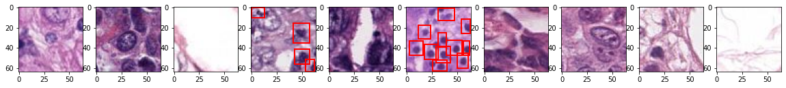
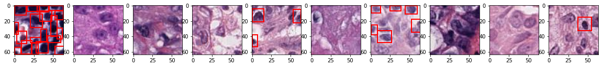
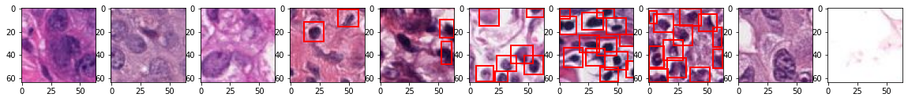
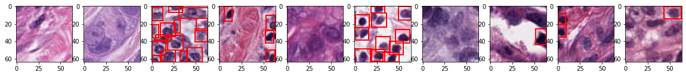
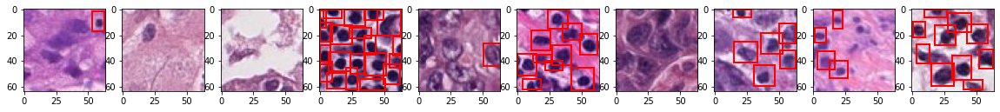
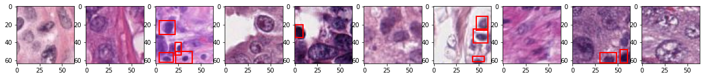
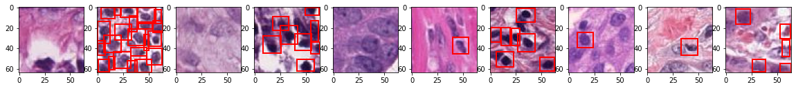
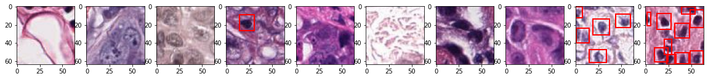
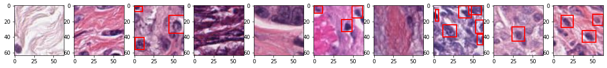